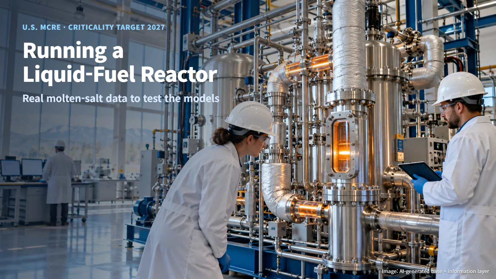
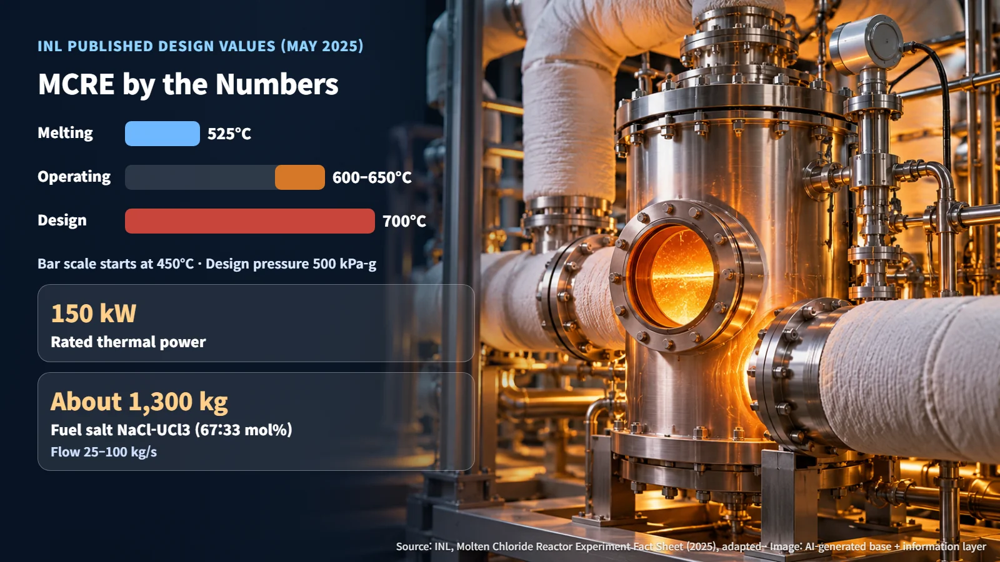
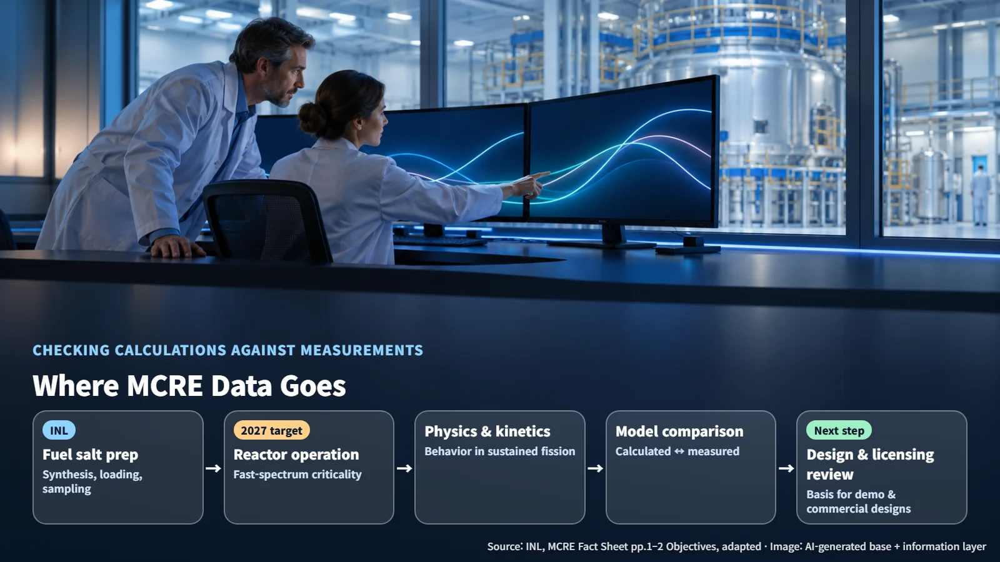

United States · Molten Salt Reactors
Running a Liquid-Fuel Reactor for Real: The U.S. Molten Chloride Reactor Experiment
DOE cost-share support accelerates the final phase of an experiment that will run a fast-neutron reactor on liquid chloride salt fuel and check computer models against real measurements.
Editorial responsibility: GlobalNuclearNews
Most people picture reactor fuel as solid rods. Some reactors, however, use fuel that flows as a hot liquid. Today computers can simulate almost anything, so why would anyone need to actually run a reactor like this? An experiment now being prepared in the United States shows why.
On October 14, 2026, Southern Company, Idaho National Laboratory (INL) and CORE POWER announced that the U.S. Department of Energy (DOE), through its Advanced Reactor Demonstration Program (ARDP), had approved cost-share support to accelerate the final phase of the Molten Chloride Reactor Experiment (MCRE). The detailed scope and amount of the support have not been disclosed.

Liquid Salt Fuel Instead of Solid Rods
The MCRE fuel is a molten salt: a mix of sodium chloride and uranium chloride, melted at high temperature. Think of a salt-like compound heated until it becomes a liquid. The composition is NaCl and UCl3 in a 67 to 33 ratio by amount of substance (mol%).
Because the uranium is dissolved in a liquid salt, the fuel is handled in a different way. Making the fuel (synthesis), loading it into the reactor (injection), drawing off small amounts for analysis (sampling) and removing it again (draining) become core functions of running the experiment. A reactor in which molten salt fuel circulates through piping while fission takes place inside it: that is the picture MCRE is built around. It therefore calls for fuel behavior, chemistry and materials testing that differ from those of reactors using solid fuel assemblies.
Fuel preparation is moving forward step by step. Using depleted uranium (uranium with a low share of the easily fissioned uranium-235), INL developed a process to synthesize, filter and package fuel salt in 18 kg batches, and in August 2025 it reported progress on synthesizing a full batch.
MCRE by the Numbers: 150 kW, 650°C
INL's May 2025 Fact Sheet lists the published MCRE design values. Rated thermal power is 150 kW, a very small experimental scale compared with a power plant. The fuel salt inventory is about 1,300 kg, designed to circulate at 25–100 kg per second. Around the core sits a magnesium oxide reflector that sends neutrons back toward the core, and four boron carbide control rods absorb neutrons to regulate the reaction.
The temperature figures are easiest to understand side by side:
- Operating temperature 600–650°C: the temperature of the fuel salt during normal operation.
- Design conditions 700°C / 500 kPa-g: the margin-bearing basis used to design the equipment. kPa-g is pressure measured relative to atmospheric pressure (gauge pressure).
- Melting point 525°C: the temperature at which the fuel salt turns from solid to liquid.
In short, the fuel salt flows as a liquid at 600–650°C, above its 525°C melting point, and the equipment is designed to withstand a higher 700°C condition. These are values from the public design documents; the final fabrication and operating configuration will be set in follow-on design and test documents.

Why Calculations Must Be Checked Against Measurements
Three terms are central to MCRE. Fast neutrons refers to using the fast neutrons released by fission directly, without slowing them down. Criticality is the state in which the fission chain reaction sustains itself at a steady level, much like a campfire that keeps burning evenly without more wood. Kinetics describes how a reactor responds over time when power or temperature changes, similar to how quickly and in what way a car responds when you press the accelerator.
Because liquid fuel keeps changing temperature and position as it flows, predicting this response by calculation alone leaves uncertainty. MCRE aims to reduce that uncertainty by measuring reactor physics and kinetics values experimentally in the fast-neutron regime. Placing the values produced by computational models side by side with values measured in actual operation, and checking the differences, is the heart of the experiment.
INL explains that the measured data will provide a scientific and engineering basis for later developers' reactor designs and for regulators' technical reviews. A 2024 public paper listed MCRE's objectives as obtaining physics and kinetics data, demonstrating fuel salt handling, building a supply chain for components that work in high-temperature, radiation environments, and laying the data foundation for operating licenses of follow-on demonstration reactors. INL is responsible for fuel salt synthesis and handling, fuel loading and reactor operation, and post-operation deactivation and decommissioning.

Criticality in 2027, and the Long Road to Sea
The participants have set a target of initial criticality as early as 2027. The items to watch next are the detailed scope and amount of the support agreement, the final-phase process, and the status of criticality preparations.
CORE POWER presents nuclear propulsion for large merchant ships as a future application path. MCRE concentrates on the reactor experiment itself, and marine use is a follow-on design and regulatory task that builds on its results. Putting a reactor on a ship will require additional verification linking the experimental data to ship design conditions, along with compliance with ship safety rules.
International rules are also moving. The International Maritime Organization (IMO) explains that Chapter VIII of the International Convention for the Safety of Life at Sea (SOLAS) covers basic requirements and radiation hazards for nuclear-powered ships and refers to the 1981 Code of Safety for Nuclear Merchant Ships. In May 2026, the 111th session of the Maritime Safety Committee (MSC) approved a work plan that includes developing and revising safety rules related to nuclear, wind and battery technologies.
Once measured values start to accumulate on how a chain reaction behaves inside molten salt, the story of liquid-fuel reactors moves from calculation to the written record.
Revision r001 · October 26, 2026. Editorial attribution added; article content and sources retained.